근궤적을 이용한 PID 제어기 설계
- 이득 K 하나만 바꿔서는 왜 원하는 극점에 갈 수 없는 경우가 있나?
- PD 제어기의 영점 위치는 어떤 계산으로 정해지나? 그 계산을 MATLAB 코드로 어떻게 옮기나?
- PI 제어기의 영점은 왜 원점 가까이에 두나? 가까이 두면 무엇을 잃나?
- PID를 넣었더니
stepinfo가 이상한 성능값을 내놓는다. 무엇이 「이상한」 것인가? - MATLAB에서 설계한 제어기를 Simulink 블록 그림으로 옮기면 같은 응답이 나오나?
6회에서는 성능 사양(최대초과·첨두시간·정착시간)을 s 평면의 경계선으로 바꾸고, 근궤적 위에서 그 영역 안에 드는 이득 K의 범위를 찾았다. 그런데 그 방법에는 전제가 하나 있었다. 근궤적이 원하는 영역을 지나가야 한다는 것이다. 근궤적이 아예 그 영역을 비켜 가면 K를 아무리 바꿔도 사양을 맞출 수 없다.
그럴 때 하는 일이 보상(compensation)이다. 제어기에 영점과 극점을 더해
근궤적의 모양 자체를 바꾼다. 오늘은
PD 제어기로 근궤적을 목표 극점 위로 끌어오고, PI 제어기로 정상상태 오차를 없앤 뒤,
같은 문제를 풀어 둔 Simulink 모델 simulink_pid_design.slx로 결과를 확인한다.
계산의 알맹이는 근궤적의 두 조건 — 각도 조건과 크기 조건 — 이다. 5회에서 근궤적을 그릴 때 썼던 바로 그 두 식이 이번에는 제어기를 설계하는 식으로 쓰인다.
한 장 요약
왼쪽은 오늘 쓰는 함수, 오른쪽은 그 함수가 설계 절차의 어느 단계인지다. 위에서 아래로 읽으면 설계 순서가 된다.
| 함수·코드 | 하는 일 | 설계 절차에서 쓰는 자리 |
|---|---|---|
draw_overshoot_line · draw_peak_time_line · draw_settling_time_line | 사양을 s 평면의 경계선으로 그리고 ζ·ωd·σ를 돌려준다 (6회에서 만든 함수) | ① 목표 극점 정하기 |
angle(evalfr(G, s0)) | 복소수 s0에서 G의 위상 | ② 비례 제어로 되는지 판정 (각도 조건) |
design_pd_controller(otf, p) | 극점·영점 벡터의 각도를 더해 모자란 각도를 구하고, 그 각도를 채우는 영점 위치를 계산한다 (오늘 만드는 함수) | ③ PD 영점 정하기 |
K = -1/evalfr(otf_pd, p) | 목표 극점에서 \(KG = -1\)이 되는 K | ④ 이득 정하기 (크기 조건) |
otf_pd*(s - zero_pi)/s | 원점 극점과 원점 가까운 영점을 더한다 | ⑤ PI로 정상상태 오차 없애기 |
mark_closed_pole(K*otf) | 폐루프 극점을 근궤적 위에 찍는다 (오늘 만드는 함수) | ⑥ 극점이 목표에 왔는지 확인 |
stepinfo(y, t, 1) | 최종값을 직접 정해 주고 성능 지표를 계산한다 | ⑦ 사양을 만족하는지 검증 |
pid(Kp, Ki, Kd) · pidtune | PID 제어기 객체 · 자동 조정 | ⑧ 이득을 Kp·Ki·Kd로 읽기, 비교 |
load_system · get_param · set_param · sim | Simulink 모델을 코드로 열고, 읽고, 바꾸고, 돌린다 | ⑨ 블록 선도로 같은 결과가 나오는지 |
evalfr 한 줄과 atan2 몇 줄이면 된다.
① 문제 정의 — 개루프 전달함수와 사양
첫 예제는 극점이 셋인 플랜트에 단위 피드백을 건 시스템이다. 이 시스템에 제어기를 붙여 아래 두 사양을 만족시키는 것이 목표다.
| 무엇 | 값 | 코드의 변수 |
|---|---|---|
| 개루프 전달함수 \(G(s)H(s)\) | \(\dfrac{1}{(s+3)(s+5)(s+10)}\) | otf (open-loop transfer function) |
| 최대초과(%OS) | 20% 이하 | os = 0.20 |
| 첨두시간 \(T_p\) | 0.3초 이하 | tp = 0.3 |
clc; clear
% 개루프 전달함수 G(s)H(s)
s = tf('s');
otf = 1/((s+3)*(s+5)*(s+10))
% 최대초과 비율
os = 0.20;
% 첨두시간
tp = 0.3;
% 근궤적 그리기
rlocus(otf)
hold on명령 창 출력
otf =
1
-------------------------
s^3 + 18 s^2 + 95 s + 150
Continuous-time transfer function.
Model Properties
tf('s')로 라플라스 변수 s를 만들고 곱셈으로 전달함수를 쌓는 것은 4회에서 했다.
분모가 \((s+3)(s+5)(s+10) = s^3 + 18s^2 + 95s + 150\)으로 펼쳐져 찍힌 것을 확인한다.
마지막 줄의 hold on은 이 그림 위에 다음 조각에서 경계선과 목표 극점을 이어 그리기 위한 것이다.
그래서 이 조각만으로는 그림을 남기지 않고, 다음 조각까지 실행한 뒤의 그림을 본다.
② 목표 극점 정하기
사양 두 개를 만족하는 폐루프 극점은 어디에 있어야 하나? 6회에서 2차 시스템의 성능 공식을 거꾸로 풀어 경계선을 그리는 함수 세 개를 만들었다. 그중 최대초과 경계선과 첨두시간 경계선을 그리고, 두 선이 만나는 점을 목표 극점으로 삼는다.
[zeta, theta] = draw_overshoot_line(os, 'b--');
w_d = draw_peak_time_line(tp, 'r--');
wn = w_d/sqrt(1-zeta^2);
pole_real = -zeta*wn;
pole_imag = w_d;
target_pole = pole_real + 1i*pole_imag;
fprintf('최대초과와 첨두시간을 만족하는 극점의 위치 s = %.4f + j%.4f\n', ...
pole_real, pole_imag)
plot(pole_real, pole_imag, 'rd')
hold off
axis([-25 5 -15 15])
title('기본 근궤적과 극점 설계')명령 창 출력
%OS = 20.0%, zeta = 0.4559, theta = 62.87 deg
Tp = 0.3000 s, 허수부 w_d = 10.4720 rad/s
최대초과와 첨두시간을 만족하는 극점의 위치 s = -5.3648 + j10.4720
출력 세 줄을 위에서부터 읽는다. 첫 줄은 draw_overshoot_line이 찍은 것이다 —
최대초과 20%에 해당하는 제동비가 ζ = 0.4559, 그 극점이 음의 실수축과 이루는 각이 62.87°다.
둘째 줄은 draw_peak_time_line이 찍은 것으로, 첨두시간 0.3초가 되려면 극점의 허수부가 10.472여야 한다는 뜻이다.
셋째 줄이 둘을 합친 목표 극점이다.
📐 이론과 잇기 — 목표 극점의 좌표
2차 시스템의 극점은 \(s = -\zeta\omega_n \pm j\omega_n\sqrt{1-\zeta^2}\)이고, 허수부를 \(\omega_d\)라고 부른다. 첨두시간과 최대초과는
$$T_p = \frac{\pi}{\omega_d}, \qquad \%OS = e^{-\zeta\pi/\sqrt{1-\zeta^2}} \times 100$$이다. 두 식을 ζ와 \(\omega_d\)에 대해 풀고 숫자를 넣는다.
$$\zeta = \frac{-\ln(0.2)}{\sqrt{\pi^2 + \ln^2(0.2)}} = \frac{1.6094}{\sqrt{9.8696 + 2.5903}} = 0.4559$$ $$\omega_d = \frac{\pi}{T_p} = \frac{\pi}{0.3} = 10.4720$$ $$\omega_n = \frac{\omega_d}{\sqrt{1-\zeta^2}} = \frac{10.4720}{\sqrt{1-0.4559^2}} = 11.7662$$ $$\text{실수부} = -\zeta\omega_n = -0.4559 \times 11.7662 = -5.3648$$코드의 wn·pole_real 두 줄이 정확히 마지막 두 식이다. 출력의 −5.3648 + j10.4720과 같다.
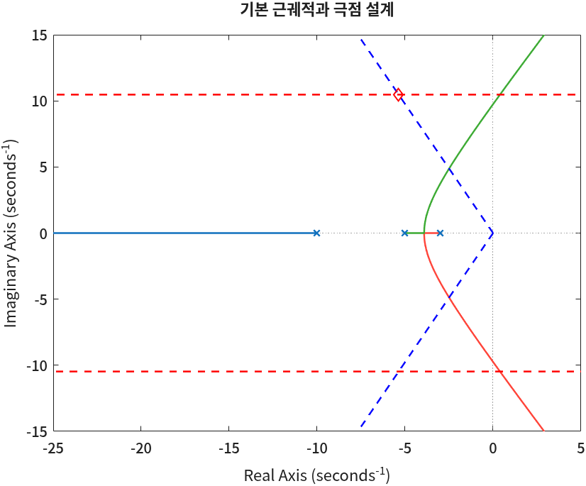
③ 비례 제어의 한계 — 각도 조건
그림만 봐도 근궤적이 마름모를 비켜 가는 것이 보인다. 그런데 「비켜 간다」를 숫자로 확인할 수는 없을까? 5회에서 배운 각도 조건이 그 판정법이다. 어떤 점 \(s_0\)가 근궤적 위에 있으려면 그 점에서 개루프 전달함수의 위상이 −180°(또는 +180°)여야 한다.
% 비례 제어(K 만 바꾸기)로는 목표 극점에 갈 수 있나? — 목표 극점에서 otf 의 각도를 본다
phase_at_target = rad2deg(angle(evalfr(otf, target_pole)))명령 창 출력
phase_at_target =
99.1553
한 줄을 안에서부터 읽는다. evalfr(otf, target_pole)은 4회에서 \(s=0\)을 넣어 정상상태 값을 구할 때 썼던 함수다.
이번에는 s 자리에 복소수인 목표 극점을 넣었다. 결과는 복소수 하나이고,
angle이 그 복소수의 각도를 라디안으로, rad2deg가 도로 바꾼다.
99.16°는 −180°와 거리가 멀다. −260.84°와 같은 각도인데(360°를 더하면 99.16°), −180°가 되려면 +80.84°가 모자란다. K는 양의 실수라서 각도를 바꾸지 못한다. 그래서 K만 바꾸는 비례 제어로는 이 극점에 갈 수 없다. 모자란 각도를 채워 줄 무언가가 필요하고, 그것이 영점이다.
📐 이론과 잇기 — 근궤적의 두 조건
단위 피드백 폐루프의 특성방정식은 \(1 + KG(s) = 0\), 곧 \(KG(s) = -1\)이다. 복소수 −1은 크기가 1이고 각도가 180°이므로 이 식은 두 개의 식이다.
$$\angle G(s_0) = (2k+1)\,180^\circ \qquad \text{(각도 조건)}$$ $$K = \frac{1}{|G(s_0)|} \qquad \text{(크기 조건)}$$각도 조건은 K와 무관하다. 그래서 「이 점이 근궤적 위에 있나」는 각도만으로 판정되고, 위에 있다면 그 점에서의 K는 크기 조건이 알려 준다. 오늘의 설계는 이 순서 그대로다 — 영점으로 각도 조건을 맞추고(④), 크기 조건으로 K를 정한다(⑤).
④ PD 제어기의 영점 — 각도 조건
PD 제어기(비례-미분 제어기)는 \(K(s - z_{pd})\) 꼴이다. 비례 동작 K에 오차의 미분에 비례하는 동작을 더한 것으로, 전달함수로 보면 영점 하나를 더한다. 영점 \(z_{pd}\)에서 목표 극점으로 가는 벡터의 각도만큼 개루프 위상이 늘어나므로, 그 각도가 정확히 80.84°가 되는 자리에 영점을 놓으면 근궤적이 목표 극점을 지나게 된다.
함수 파일 design_pd_controller
이 계산은 함수 파일로 만들어 둔다.
두 번째 예제에서도 같은 계산을 하기 때문이다. 4회에서 함수 파일을 만들 때처럼
파일 이름과 함수 이름을 같게(design_pd_controller.m) 저장하고, 스크립트와 같은 폴더에 둔다.
function zero_pd = design_pd_controller(otf, target_pole)
% 근궤적이 목표 극점 target_pole 을 지나게 하는 PD 제어기의 영점을 구한다.
% 각도 조건: 목표 극점에서 (PD 영점의 각도) + (otf 의 각도) = -180도
fprintf('\n>>>>> 근궤적이 목표 극점을 지나게 하는 PD 제어기 설계\n')
disp('목표 극점에서의 개루프 전달함수 위상 계산')
phase_G = 0;
zero_otf = zero(otf);
pole_otf = pole(otf);
% 영점에서 목표 극점으로 가는 벡터의 각도는 더한다
for i = 1:length(zero_otf)
vector = target_pole - zero_otf(i);
zero_phase = atan2(imag(vector), real(vector));
phase_G = phase_G + zero_phase;
fprintf('영점의 위상 angle(s - (%.3f + j%.3f)) = %.3f(deg)\n', ...
real(zero_otf(i)), imag(zero_otf(i)), rad2deg(zero_phase))
end
% 극점에서 목표 극점으로 가는 벡터의 각도는 뺀다
for i = 1:length(pole_otf)
vector = target_pole - pole_otf(i);
pole_phase = atan2(imag(vector), real(vector));
phase_G = phase_G - pole_phase;
fprintf('극점의 위상 angle(s - (%.3f + j%.3f)) = %.3f(deg)\n', ...
real(pole_otf(i)), imag(pole_otf(i)), rad2deg(pole_phase))
end
fprintf('극점 s = %.3f + j%.3f 에서 G(s)의 위상 = %.1f(deg) = %.3f(rad)\n', ...
real(target_pole), imag(target_pole), rad2deg(phase_G), phase_G)
% PD 영점이 채워야 할 각도: phase_PD + phase_G = -pi
phase_PD = -pi - phase_G;
fprintf('PD 제어기가 가져야할 위상 = %.3f - (%.3f) = %.4f(rad) = %.3f(deg)\n', ...
-pi, phase_G, phase_PD, rad2deg(phase_PD))
% 목표 극점에서 영점을 바라본 각도가 phase_PD 가 되도록 실수축 위의 점을 고른다
zero_pd = real(target_pole) - imag(target_pole)/tan(phase_PD);
fprintf('PD 제어기의 영점 위치 = %.4f\n', zero_pd)
end함수는 세 부분으로 읽는다.
- 두 개의
for문 — 개루프 전달함수의 영점과 극점에서 목표 극점으로 가는 벡터를 하나씩 만들고, 그 각도를 영점이면 더하고 극점이면 뺀다. 이것이 \(\angle G(s_0) = \sum \angle(s_0 - z_i) - \sum \angle(s_0 - p_i)\)의 코드 모양이다. phase_PD = -pi - phase_G— 각도 조건 \(\theta_{pd} + \angle G = -\pi\)를 \(\theta_{pd}\)에 대해 푼 줄이다.zero_pd = …/tan(phase_PD)— 그 각도가 나오는 실수축 위의 점을 삼각형으로 구하는 줄이다 (아래 📐).
🆕 이 코드에서 처음 나오는 것
- theta = atan2(y, x)
- 점 (x, y)의 각도를 −π~π 라디안으로 돌려준다.
atan(y/x)는 x의 부호를 잃어 −90°~90°밖에 내놓지 못하지만,atan2는 x와 y를 따로 받아 네 사분면을 구별한다. 여기서는 영점·극점에서 목표 극점으로 가는 벡터(복소수)의 허수부를 y, 실수부를 x로 넣어 그 벡터의 각도를 구했다. ③에서 쓴angle에 그 복소수를 넣은angle(vector)와 같은 값이다. - tan(x)
- 탄젠트. 입력은 라디안이다. 여기서는 영점에서 목표 극점을 바라본 각도 \(\theta_{pd}\)로부터 「밑변 = 높이 / tan θ」를 계산하는 데 썼다.
- fprintf('…%%…')
fprintf의 서식 문자열 안에서%글자 자체를 찍으려면%%로 쓴다. 6회 함수draw_overshoot_line의'%%OS = …'가 그 예다.
for·함수 파일은 3회·4회에서 나왔다.
이제 함수를 부른다. 끝에 ;를 붙였으므로 반환값은 찍히지 않고, 함수 안의 fprintf만 찍힌다.
zero_pd = design_pd_controller(otf, target_pole);명령 창 출력
>>>>> 근궤적이 목표 극점을 지나게 하는 PD 제어기 설계
목표 극점에서의 개루프 전달함수 위상 계산
극점의 위상 angle(s - (-10.000 + j0.000)) = 66.124(deg)
극점의 위상 angle(s - (-5.000 + j0.000)) = 91.995(deg)
극점의 위상 angle(s - (-3.000 + j0.000)) = 102.725(deg)
극점 s = -5.365 + j10.472 에서 G(s)의 위상 = -260.8(deg) = -4.553(rad)
PD 제어기가 가져야할 위상 = -3.142 - (-4.553) = 1.4110(rad) = 80.845(deg)
PD 제어기의 영점 위치 = -7.0525📐 이론과 잇기 — 각도를 더하고, 모자란 만큼을 영점으로
목표 극점 \(s_0 = -5.3648 + j10.4720\)에서 세 극점까지의 벡터 각도를 출력에서 읽어 모두 뺀다. 이 플랜트에는 영점이 없어 첫 번째 for 문은 한 번도 돌지 않았다.
③에서 angle로 구한 99.16°와 같은 각도다(−260.84° + 360° = 99.16°). 각도 조건을 맞추려면
영점은 실수축 위에 있으므로, 목표 극점에서 수선을 내리면 높이 \(\omega_d = 10.4720\), 밑변 \(x\), 각도 \(\theta_{pd}\)인 직각삼각형이 생긴다.
$$\tan\theta_{pd} = \frac{10.4720}{x} \;\Rightarrow\; x = \frac{10.4720}{\tan 80.845^\circ} = \frac{10.4720}{6.2051} = 1.6877$$ $$z_{pd} = -5.3648 - 1.6877 = -7.0525$$코드의 real(target_pole) - imag(target_pole)/tan(phase_PD)가 이 두 줄이다. 영점이 목표 극점보다 1.69만큼 왼쪽에 놓인다.
⚠️ 한 번도 돌지 않은 줄의 오타 — 영점이 있는 플랜트에서만 터진다
「영점이 없으면 첫 번째 for 문을 건너뛰자」고 if ~isempty(zero_otf)로 감싸고, 그 안에서
for i = 1:length(zeros_otf)처럼 변수 이름을 살짝 틀리게 쓰기 쉽다(zeros는 MATLAB 함수 이름이기도 해서 손에 붙는다).
이 예제처럼 영점이 없는 플랜트로만 시험하면 if가 그 줄을 건너뛰므로 오류가 한 번도 드러나지 않는다.
영점이 하나라도 있는 플랜트를 넣는 순간 「Unrecognized function or variable 'zeros_otf'」로 멈춘다.
위 함수는 if를 쓰지 않는다. 영점이 없으면 1:0이 빈 범위라 반복이 저절로 0번 돌기 때문이다.
그러면 반복 범위의 줄이 언제나 실행되어, 이름이 틀렸을 때 첫 실행에서 바로 드러난다.
기억해 둘 것은 하나다 — 한 번도 실행되지 않은 줄은 검사되지 않은 줄이다. 연습문제 1번이 이 경로를 실제로 돌려 보는 문제다.
⑤ 이득 K — 크기 조건과 evalfr
영점을 더한 개루프 전달함수 \(G_{pd}(s) = (s + 7.0525)\,G(s)\)는 이제 각도 조건상 목표 극점을 지난다. 그 점에서 K가 얼마여야 하는지는 크기 조건이 알려 준다. 코드에서는 크기 조건과 각도 조건을 따로 쓰지 않고 \(KG_{pd}(s_0) = -1\)을 K에 대해 그대로 푼다.
% PD 제어기를 반영한 근궤적
otf_pd = otf * (s - zero_pd)
K_pd = -1/evalfr(otf_pd, target_pole);
K_pd = real(K_pd);
fprintf("PD 제어기 적용 후 target pole에서의 상수 이득 K=%1.4f\n", K_pd)
rlocus(otf_pd)
hold on
plot(real(target_pole), imag(target_pole), 'rd')
hold off
title('PD 보상 후 근궤적')
axis([-25 5 -15 15])명령 창 출력
otf_pd =
s + 7.053
-------------------------
s^3 + 18 s^2 + 95 s + 150
Continuous-time transfer function.
Model Properties
PD 제어기 적용 후 target pole에서의 상수 이득 K=121.4518
K_pd = -1/evalfr(otf_pd, target_pole)이 \(K = -1/G_{pd}(s_0)\)이다.
각도 조건이 정확히 맞았다면 \(G_{pd}(s_0)\)는 음의 실수이고 K는 양의 실수로 나온다.
실제로는 목표 극점의 좌표를 소수점에서 자른 오차 때문에 허수부가 아주 조금 남을 수 있어서, 다음 줄에서 real로 실수부만 남긴다.
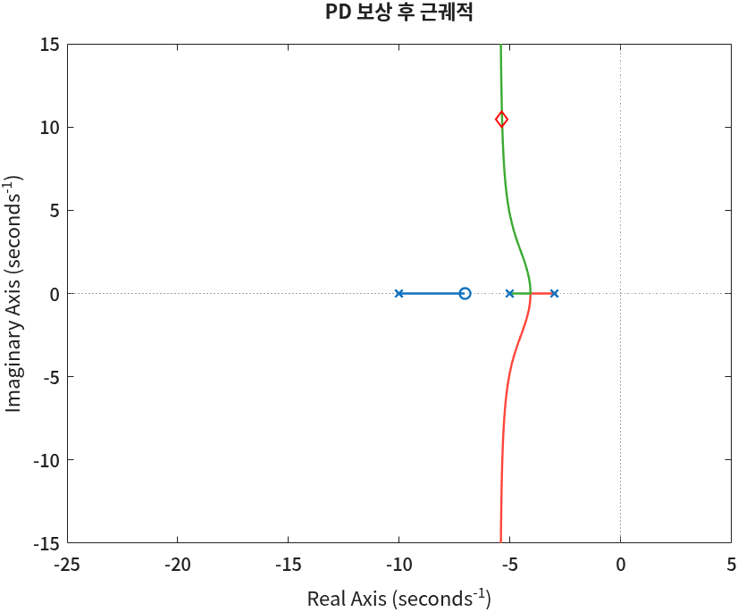
📐 이론과 잇기 — 크기 조건을 손으로
크기 조건 \(K = 1/|G_{pd}(s_0)|\)을 벡터 길이로 쓰면 「극점까지 거리의 곱 ÷ 영점까지 거리의 곱」이다.
$$K = \frac{|s_0+3|\,|s_0+5|\,|s_0+10|}{|s_0+7.0525|} = \frac{10.7357 \times 10.4784 \times 11.4520}{10.6071} = 121.45$$출력의 K=121.4518과 같다. 거리 네 개는 각도를 구할 때 쓴 벡터들의 길이(abs(vector))다 — 같은 벡터의 각도와 길이를 각각 각도 조건과 크기 조건에 쓴 것이다.
⑥ PD 보상 결과 확인
설계한 \(K_{pd}\,G_{pd}\)로 루프를 닫고, 정상상태 값과 성능 지표를 본다.
% 보정된 시스템의 성능 확인
tf_total = feedback(K_pd*otf_pd, 1)
steady = evalfr(tf_total, 0)
S = stepinfo(tf_total)명령 창 출력
tf_total =
121.5 s + 856.5
-----------------------------
s^3 + 18 s^2 + 216.5 s + 1007
Continuous-time transfer function.
Model Properties
steady =
0.8510
S =
struct with fields:
RiseTime: 0.1298
TransientTime: 0.7078
SettlingTime: 0.7078
SettlingMin: 0.7725
SettlingMax: 1.0312
Overshoot: 21.1774
Undershoot: 0
Peak: 1.0312
PeakTime: 0.3004세 가지를 읽는다.
PeakTime: 0.3004— 첨두시간 사양 0.3초에 거의 정확히 맞았다.Overshoot: 21.1774— 사양 20%보다 1.2%p 크다. 목표 극점은 정확히 20%짜리 자리인데 넘친 이유는, 이 시스템이 2차가 아니기 때문이다. 폐루프 극점이 하나 더 있고 영점(−7.05)도 있어서, 2차 공식이 근사로만 맞는다. 설계를 사양보다 조금 여유 있게(예: 18%) 잡는 이유가 이것이다.steady = 0.8510— 계단 입력 1에 대해 출력이 0.851에서 멈춘다. 정상상태 오차가 0.149다.stepinfo의 최대초과 21.18%도 1이 아니라 이 0.851을 기준으로 잰 값이다 — \((1.0312 - 0.851)/0.851 = 21.2\%\).
📐 이론과 잇기 — 0형 시스템의 정상상태 오차
개루프 \(K_{pd}G_{pd}(s)\)에는 원점 극점이 없다(0형). 4회의 위치 오차 상수 \(K_p\)로 정상상태 값을 구하면
$$K_p = \lim_{s\to0} K_{pd}G_{pd}(s) = \frac{121.45 \times 7.0525}{150} = 5.710$$ $$y(\infty) = \frac{K_p}{1+K_p} = \frac{5.710}{6.710} = 0.851, \qquad e(\infty) = \frac{1}{1+K_p} = 0.149$$출력의 steady = 0.8510과 같다. 이 오차를 0으로 만들려면 개루프에 원점 극점(적분기)이 있어야 한다 — 그것이 PI 제어기다.
⑦ PI 제어기의 영점 — 원점 가까이
PI 제어기(비례-적분 제어기)는 \(\dfrac{s - z_{pi}}{s}\) 꼴로, 원점 극점 하나와 영점 하나를 더한다. 원점 극점이 1형 시스템을 만들어 계단 입력의 정상상태 오차를 0으로 만든다.
그런데 극점과 영점을 더하면 근궤적의 모양이 또 바뀌어서, 애써 맞춘 목표 극점을 벗어날 수 있다. 그래서 영점을 원점 바로 옆(−0.01)에 둔다. 목표 극점에서 보면 원점과 −0.01은 거의 같은 자리라서, 두 벡터의 각도가 거의 같고 서로 상쇄된다. 근궤적의 모양이 목표 극점 근처에서는 거의 바뀌지 않는다.
zero_pi = -0.01;
fprintf('PI 제어기의 영점 위치 선택: %.2f\n', zero_pi)
% PID 제어기를 반영한 근궤적
otf_pid = otf_pd * (s - zero_pi) / s
rlocus(otf_pid)
hold on
plot(real(target_pole), imag(target_pole), 'rd')
fprintf('target pole에서의 상수이득:')
K = -1/evalfr(otf_pid, target_pole)
% K 값은 양의 실수여야 하므로 실수부만 사용함
K = real(K)
mark_closed_pole(K*otf_pid)
hold off
axis([-25 5 -15 15])
title('PID 보상 후 근궤적')명령 창 출력
PI 제어기의 영점 위치 선택: -0.01
otf_pid =
s^2 + 7.063 s + 0.07053
-----------------------------
s^4 + 18 s^3 + 95 s^2 + 150 s
Continuous-time transfer function.
Model Properties
target pole에서의 상수이득:
K =
1.2150e+02 + 9.1938e-02i
K =
121.4988
PID 제어기 반영하여 전체 시스템 T(s)의 극점 계산
final_poles =
-5.3604 +10.4721i
-5.3604 -10.4721i
-7.2706 + 0.0000i
-0.0085 + 0.0000i출력에서 세 곳을 본다.
K = 1.2150e+02 + 9.1938e-02i— 이번에는 K에 허수부 0.09가 남았다. PI의 극점·영점이 목표 극점에서 각도를 아주 조금(약 0.04°) 바꿔서, 각도 조건이 정확히는 맞지 않기 때문이다. 허수부가 실수부의 1/1300 정도이니 실수부만 쓴다. PD 단계의 121.45와 거의 같다.final_poles의 첫 두 줄 — 폐루프 극점이 −5.3604 ± j10.4721로, 목표 −5.3648 ± j10.4720에 거의 붙어 있다.- 마지막 줄 −0.0085 — PI가 더한 느린 극점이다. PI 영점 −0.01 바로 옆에 생겼다. 이 극점이 ⑧의 「이상한 성능값」의 원인이다.
폐루프 극점을 찍는 일도 두 예제에서 되풀이하므로 함수 파일로 만들어 둔다.
function mark_closed_pole(otf)
% 제어기를 넣은 개루프 전달함수 otf 로 단위 피드백을 닫고,
% 폐루프 극점을 근궤적 위에 파란 삼각형으로 찍는다 (목표 극점에 왔는지 눈으로 확인)
tf_total = feedback(otf, 1);
disp('PID 제어기 반영하여 전체 시스템 T(s)의 극점 계산')
final_poles = pole(tf_total)
plot(real(final_poles), imag(final_poles), 'b>')
end
극점마다 하나씩 찍으려고 마지막 줄을 for p = final_poles … plot(…) end로 쓰고 싶어질 수 있다.
그런데 final_poles는 세로 벡터(열 하나)라서 for가 열 단위로 한 번만 돌고, 그 한 번에 p가 벡터 전체가 된다.
결과 그림은 같지만 「하나씩 찍는다」로 읽히는 코드가 실제로는 한 번에 찍는 셈이다. 그래서 여기서는 plot 한 줄로 썼다.
for는 행렬의 열을 하나씩 꺼낸다는 것을 기억해 두면 좋다.
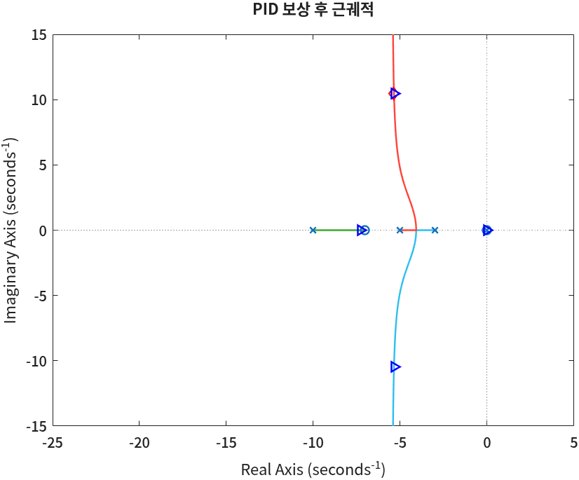
⑧ PID 보상 결과와 stepinfo의 정상상태 값
PID를 넣은 루프를 닫고 계단응답과 성능 지표를 본다. 그림에는 사양선 세 개를 겹친다 — 첨두시간 0.3초(초록), 정상상태 값(분홍), 최대초과 한계(검정).
% 보정된 시스템의 성능 확인
tf_total = feedback(K*otf_pid, 1)
steady = dcgain(tf_total)
% 단위계단응답 그리고 성능선과 일치하는지 확인
step(tf_total, 0:0.01:5)
hold on
peak = steady * (1+os);
plot([tp, tp], [0, 1.2], 'g--')
plot([0, 10], [steady, steady], 'm--')
plot([0, 10], [peak, peak], 'k--')
hold off
axis([0 3 0 1.2])
S = stepinfo(tf_total)명령 창 출력
tf_total =
121.5 s^2 + 858.1 s + 8.569
-----------------------------------------
s^4 + 18 s^3 + 216.5 s^2 + 1008 s + 8.569
Continuous-time transfer function.
Model Properties
steady =
1
S =
struct with fields:
RiseTime: 0.1339
TransientTime: 2.0517
SettlingTime: 2.0517
SettlingMin: 0.8172
SettlingMax: 1.0322
Overshoot: 18.4470
Undershoot: 0
Peak: 1.0322
PeakTime: 0.2921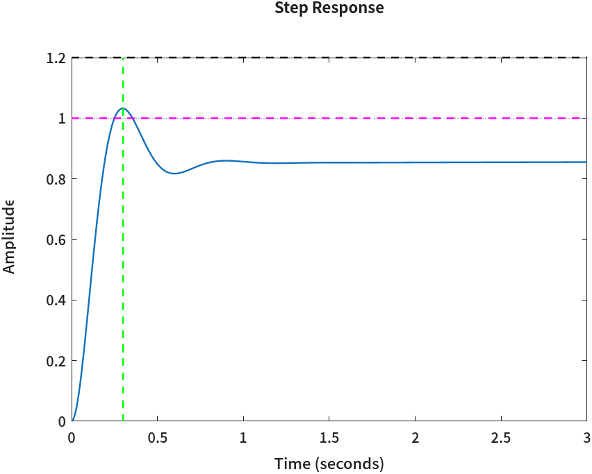
분자·분모의 상수항이 둘 다 8.569로 같으니 dcgain은 정확히 1이다 — PI가 정상상태 오차를 없앤 것은 맞다.
그런데 그림은 0.85에 머물러 있고, stepinfo는 최대초과 18.4%를 내놓는다.
첨두값 1.0322를 최종값 1과 비교하면 3.2%여야 하는데 18.4%가 나왔다. 무엇이 어긋났을까?
정상상태 값이 1이 되었는데 성능값이 오히려 이상해졌다. 정체는 ⑦에서 본 −0.0085의 느린 극점이다. 시간을 길게 잡아 확인한다.
% 600초 동안의 계단응답 — 느린 극점이 남긴 꼬리를 본다
[y, t] = step(tf_total, 0:0.01:600);
plot(t, y, 'b-')
hold on
plot([0 600], [1 1], 'm--')
plot([0 600], [0.98 0.98], 'k:')
hold off
xlabel('Time (seconds)'); ylabel('Amplitude')
title('PID 보상 후 계단응답 — 600초')
grid on
fprintf('t = 3 s 에서 y = %.4f, t = 100 s 에서 y = %.4f\n', y(t == 3), y(t == 100))
% 최종값을 1로 정해 주고 성능 지표를 다시 계산한다
S_long = stepinfo(y, t, 1)명령 창 출력
t = 3 s 에서 y = 0.8552, t = 100 s 에서 y = 0.9366
S_long =
struct with fields:
RiseTime: 0.1613
TransientTime: 235.4648
SettlingTime: 235.4648
SettlingMin: 0.8172
SettlingMax: 1.0324
Overshoot: 3.2431
Undershoot: 0
Peak: 1.0324
PeakTime: 0.3000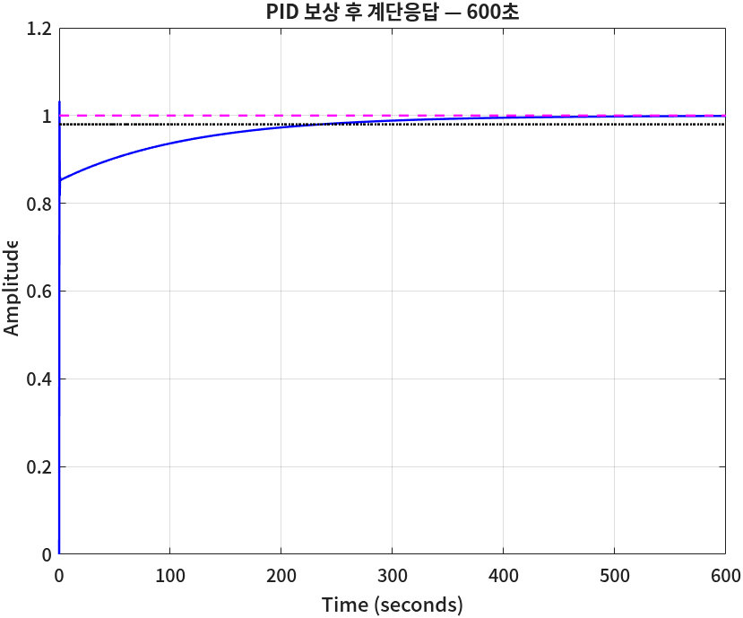
🆕 이 코드에서 처음 나오는 것
- S = stepinfo(y, t, yfinal)
stepinfo에 시스템 대신 응답 데이터(y, t)와 최종값을 직접 준다. 여기서는 600초 동안 계산한 응답과 최종값 1을 줘서, 시스템을 넘겼을 때stepinfo가 스스로 고르는 시간 구간에 기대지 않게 했다.- y(t == 3)
- 논리 인덱싱.
t == 3은 t와 크기가 같은 참/거짓 배열이고, 이것으로 y를 인덱싱하면 참인 자리의 값만 꺼낸다. 여기서는 3초와 100초의 출력값을 꺼냈다.
📐 이론과 잇기 — 극점·영점 거의 상쇄와 느린 꼬리
폐루프 극점 −0.0085와 영점 −0.01은 거의 붙어 있다. 이런 쌍은 부분분수 전개에서 계수(유수)가 작은 항을 만든다. 응답은 대략 「빠른 부분 + 느린 꼬리」로 나뉜다.
$$y(t) \approx \underbrace{0.85 + (\text{빠른 진동})}_{\text{PD 때와 거의 같은 응답}} \; + \; \underbrace{0.15\,\bigl(1 - e^{-0.0085\,t}\bigr)}_{\text{느린 꼬리}}$$꼬리의 시정수는 \(1/0.0085 \approx 118\)초다. 남은 몫 0.15가 2% 띠(0.02) 아래로 줄어드는 시간은 \(0.15\,e^{-t/118} = 0.02\)에서 \(t = 118 \ln(0.15/0.02) = 118 \times 2.01 = 238\)초 — 600초짜리 출력의 SettlingTime: 235.46과 거의 같다.
100초에서 \(y = 0.9366\)인 것도 꼬리 식으로 맞춰 볼 수 있다: \(0.85 + 0.15(1 - e^{-0.85}) = 0.85 + 0.15 \times 0.573 = 0.936\).
0.85라는 숫자는 ⑥의 PD 정상상태 값 0.851이다. PI 영점을 원점 가까이 둔 덕에 빠른 부분은 PD 때와 거의 같고, PD가 남긴 오차 0.149를 느린 꼬리가 아주 천천히 메운다.
이제 처음의 18.4%가 설명된다. stepinfo(tf_total)처럼 시스템을 넘기면 stepinfo가 스스로 시뮬레이션 구간을 고르는데,
이 시스템에서는 그 구간이 10초 정도에서 끝난다(같은 시스템에 step(tf_total)을 기본값으로 부르면 9.7초에서 끝난다).
그 구간 끝에서 응답은 아직 0.86 근처다. 18.4%를 거꾸로 풀면 \(1.0322 / 1.1845 = 0.871\) — 성능값이 1이 아니라 0.87쯤을 기준으로 계산된 셈이다.
정착시간 2.05초도 같은 기준에서 나온 숫자다. 최종값 1을 직접 주고 긴 구간으로 다시 재면 최대초과 3.2%, 정착시간 235초가 된다.
⚠️ 사양선을 그릴 기준값 — 단계마다 다시 구한다
성능선 peak = steady * (1+os)를 그릴 때 작업공간에 남아 있는 steady를 그대로 쓰기 쉽다.
그러면 PD 단계(⑥)에서 구한 0.851을 기준으로 선이 그려진다. PID 루프의 최종값은 1이므로 위 코드에서는 steady = dcgain(tf_total)로 다시 구했다.
PD 단계의 0.851로 그린 선은 「빠른 부분」을 보는 데에는 오히려 잘 맞는다 — 위 해석의 두 관점이 그대로 두 기준값이다.
어느 값을 기준으로 그린 선인지는 그림 제목이나 주석에 적어 두어야 나중에 읽는 사람이 헷갈리지 않는다.
⑨ Kp · Ki · Kd로 읽기 — pid
지금까지 제어기를 \(K\dfrac{(s - z_{pd})(s - z_{pi})}{s}\)라는 극점·영점 꼴로 다뤘다. 그런데 PID 제어기는 보통 \(K_p + \dfrac{K_i}{s} + K_d s\)라는 이득 꼴로 적는다. 실제 장비와 Simulink 블록도 이 세 숫자를 받는다. 분자를 펼쳐 계수를 맞추면 바로 옮겨진다.
$$K\frac{(s - z_{pd})(s - z_{pi})}{s} = \frac{K s^2 - K(z_{pd}+z_{pi})\,s + K z_{pd} z_{pi}}{s} = \underbrace{K}_{K_d}\,s + \underbrace{-K(z_{pd}+z_{pi})}_{K_p} + \frac{\overbrace{K z_{pd} z_{pi}}^{K_i}}{s}$$% K (s - zero_pd)(s - zero_pi) / s 를 펼쳐 Kp, Ki, Kd 로 읽는다
Kd = K;
Kp = -K*(zero_pd + zero_pi);
Ki = K*zero_pd*zero_pi;
fprintf('Kp = %.2f, Ki = %.2f, Kd = %.2f\n', Kp, Ki, Kd)
C = pid(Kp, Ki, Kd)
% 같은 제어기인지 확인: 두 전달함수의 차이가 0이면 같다
C_tf = K*(s - zero_pd)*(s - zero_pi)/s;
difference = norm(tf(C) - C_tf)명령 창 출력
Kp = 858.09, Ki = 8.57, Kd = 121.50
C =
1
Kp + Ki * --- + Kd * s
s
with Kp = 858, Ki = 8.57, Kd = 121
Continuous-time PID controller in parallel form.
Model Properties
difference =
0🆕 이 코드에서 처음 나오는 것
- C = pid(Kp, Ki, Kd)
- PID 제어기 객체를 만든다(Control System Toolbox). 출력의 「parallel form」은 \(K_p + K_i/s + K_d s\) 꼴이라는 뜻이다.
tf객체처럼 곱하고feedback에 넣을 수 있다. 여기서는 극점·영점으로 설계한 제어기를 이득 세 개로 옮겨 적는 데 썼다. - tf(C)
- 다른 꼴의 시스템 객체를 전달함수 객체로 바꾼다. 여기서는
pid객체를C_tf와 뺄셈하려고 같은 꼴로 맞췄다. - norm(sys)
- 시스템의 「크기」(기본은 H2 노름)를 숫자 하나로 낸다. 여기서는 두 제어기의 차이 시스템이 0인지 — 곧 두 제어기가 같은지 — 확인하는 데 썼다. 결과 0이 그 답이다.
\(K_p = 121.50 \times (7.0525 + 0.01) = 858.09\), \(K_i = 121.50 \times 7.0525 \times 0.01 = 8.57\)이다. \(K_i\)가 \(K_p\)의 1/100밖에 안 되는 것이 「PI 영점을 원점 가까이 둔다」의 이득 꼴 모습이다 — 적분 동작이 아주 약하다. 그래서 ⑧의 꼬리가 느렸다.
⑩ 두 번째 예제 — 정착시간 사양
두 번째 예제는 플랜트에 복소 극점 \(-1 \pm j2\)가 있고, 사양이 첨두시간 대신 정착시간이다. 절차는 같고, 목표 극점을 정하는 줄만 바뀐다.
| 무엇 | 값 |
|---|---|
| 개루프 전달함수 | \(\dfrac{1}{(s^2+2s+5)(s+8)}\) |
| 최대초과 | 10% 이하 (os = 0.1) |
| 정착시간 \(T_s\) (2% 기준) | 2초 이하 (ts = 2) |
clc; clear
% 개루프 전달함수 G(s)H(s)
s = tf('s');
otf = 1/((s^2+2*s+5)*(s+8))
% 최대초과 비율
os = 0.1;
% 정착시간
ts = 2;
% 근궤적 그리기
rlocus(otf)
hold on명령 창 출력
otf =
1
------------------------
s^3 + 10 s^2 + 21 s + 40
Continuous-time transfer function.
Model Properties정착시간 경계선은 6회의 draw_settling_time_line이 그린다. 이번에는 실수부가 먼저 정해지고, 허수부는 ζ에서 나온다.
[zeta, theta] = draw_overshoot_line(os, 'b--');
sigma_d = draw_settling_time_line(ts, 'r--');
wn = sigma_d/zeta;
pole_real = -sigma_d;
pole_imag = wn * sqrt(1 - zeta^2);
target_pole = pole_real + 1i*pole_imag;
fprintf('최대초과와 정착시간을 만족하는 극점의 위치 s = %.4f + j%.4f\n', ...
pole_real, pole_imag)
plot(pole_real, pole_imag, 'rd')
hold off
axis([-25 5 -15 15])
title('기본 근궤적과 극점 설계')명령 창 출력
%OS = 10.0%, zeta = 0.5912, theta = 53.76 deg
Ts = 2.0000 s, 실수부 -sigma_d = -2.0000
최대초과와 정착시간을 만족하는 극점의 위치 s = -2.0000 + j2.7288📐 이론과 잇기 — 정착시간에서 목표 극점으로
$$T_s = \frac{4}{\zeta\omega_n} \;\Rightarrow\; \sigma_d = \zeta\omega_n = \frac{4}{2} = 2$$ $$\omega_n = \frac{\sigma_d}{\zeta} = \frac{2}{0.5912} = 3.3832, \qquad \omega_d = \omega_n\sqrt{1-\zeta^2} = 3.3832 \times 0.8065 = 2.7288$$목표 극점 \(-2 + j2.7288\)이 출력과 같다.
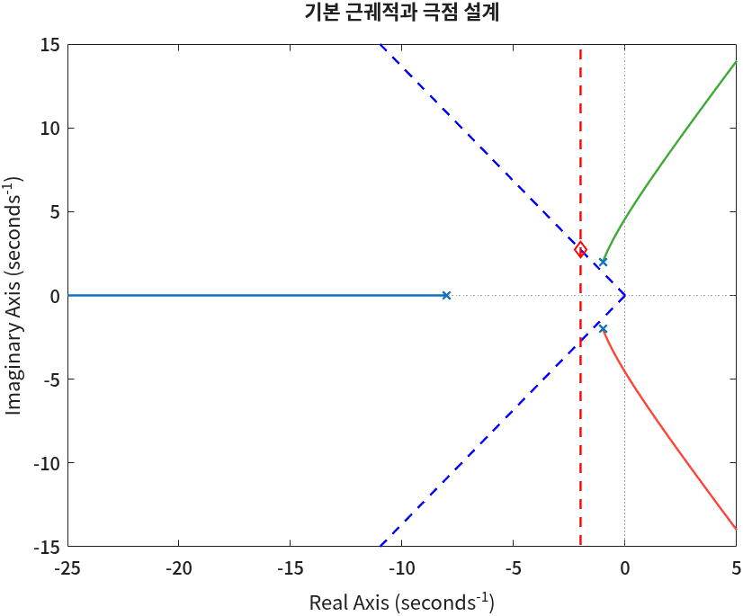
PD 영점과 이득을 같은 함수로 구한다. 이번 플랜트의 극점 중 둘이 복소수라는 것만 다르다.
zero_pd = design_pd_controller(otf, target_pole);
% PD 제어기를 반영한 근궤적
otf_pd = otf * (s - zero_pd)
K_pd = -1/evalfr(otf_pd, target_pole);
K_pd = real(K_pd);
fprintf("PD 제어기 적용 후 target pole에서의 상수 이득 K=%1.4f\n", K_pd)
rlocus(otf_pd)
hold on
plot(real(target_pole), imag(target_pole), 'rd')
hold off
title('PD 보상 후 근궤적')
axis([-25 5 -15 15])명령 창 출력
>>>>> 근궤적이 목표 극점을 지나게 하는 PD 제어기 설계
목표 극점에서의 개루프 전달함수 위상 계산
극점의 위상 angle(s - (-8.000 + j0.000)) = 24.456(deg)
극점의 위상 angle(s - (-1.000 + j2.000)) = 143.917(deg)
극점의 위상 angle(s - (-1.000 + j-2.000)) = 101.941(deg)
극점 s = -2.000 + j2.729 에서 G(s)의 위상 = -270.3(deg) = -4.718(rad)
PD 제어기가 가져야할 위상 = -3.142 - (-4.718) = 1.5763(rad) = 90.313(deg)
PD 제어기의 영점 위치 = -1.9851
otf_pd =
s + 1.985
------------------------
s^3 + 10 s^2 + 21 s + 40
Continuous-time transfer function.
Model Properties
PD 제어기 적용 후 target pole에서의 상수 이득 K=14.4461모자란 각도가 90.31°라서 영점이 목표 극점의 거의 바로 아래(−1.9851)에 놓였다. 복소 극점 \(-1 + j2\)에서 목표 극점으로 가는 벡터가 143.9°로 크게 기울어 있어 각도를 많이 잡아먹은 탓이다.
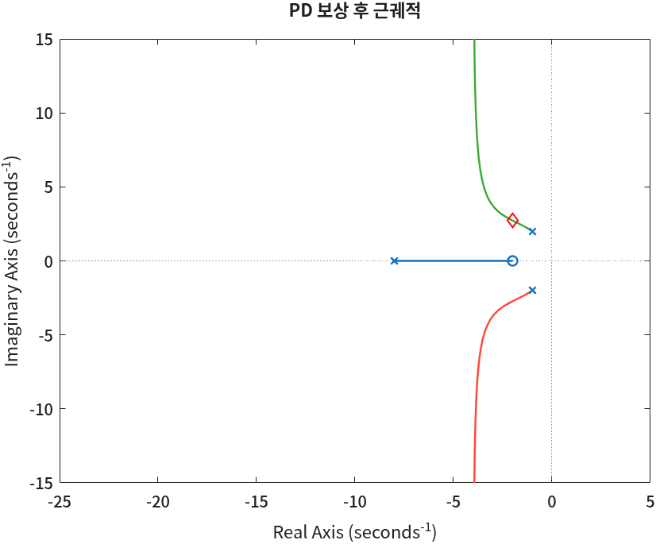
설계 검증에서 걸리는 것
여기서부터가 첫 예제와 다르다. PD 결과부터 확인한다.
% 보정된 시스템의 성능 확인
tf_total = feedback(K_pd*otf_pd, 1);
steady = evalfr(tf_total, 0)
S = stepinfo(tf_total)명령 창 출력
steady =
0.4176
S =
struct with fields:
RiseTime: 0.2887
TransientTime: 2.3004
SettlingTime: 2.3004
SettlingMin: 0.3861
SettlingMax: 0.5668
Overshoot: 35.7526
Undershoot: 0
Peak: 0.5668
PeakTime: 0.7829사양과 대조하면 둘 다 어긋났다.
- 최대초과 35.75% — 사양 10%의 세 배가 넘는다. 목표 극점 바로 아래의 영점(−1.985)이 원인이다. 영점은 응답에 그 미분 성분을 더해 초과를 키우는데, 영점이 우세극점과 가까울수록 그 효과가 크다. 첫 예제의 영점(−7.05)은 목표 극점보다 1.7만큼 왼쪽이었다.
- 정상상태 값 0.4176 — \(K_p = 14.446 \times 1.985 / 40 = 0.717\)이라 \(0.717/1.717 = 0.418\)이다. 첫 예제의 0.851보다 훨씬 낮다.
PI를 더한다. PI 영점은 첫 예제(−0.01)보다 열 배 먼 −0.1에 둔다.
zero_pi = -0.1;
fprintf('PI 제어기의 영점 위치 선택: %.1f\n', zero_pi)
% PID 제어기를 반영한 근궤적
otf_pid = otf_pd * (s - zero_pi) / s;
rlocus(otf_pid)
hold on
plot(real(target_pole), imag(target_pole), 'rd')
K = real(-1/evalfr(otf_pid, target_pole))
mark_closed_pole(K*otf_pid)
hold off
axis([-25 5 -15 15])
title('PID 보상 후 근궤적')명령 창 출력
PI 제어기의 영점 위치 선택: -0.1
K =
14.6943
PID 제어기 반영하여 전체 시스템 T(s)의 극점 계산
final_poles =
-5.9994 + 0.0000i
-1.9792 + 2.7584i
-1.9792 - 2.7584i
-0.0422 + 0.0000i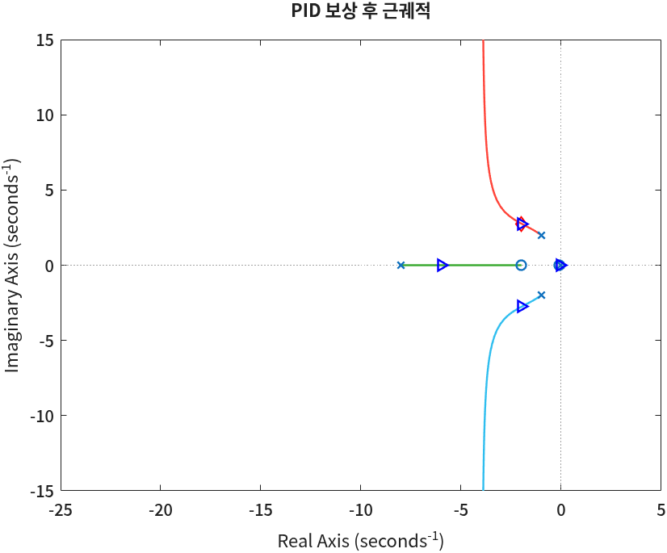
% 보정된 시스템의 성능 확인
tf_total = feedback(K*otf_pid, 1);
% PI 가 들어갔으니 정상상태 값은 1 이다 — 성능선은 이 값을 기준으로 긋는다
steady = dcgain(tf_total)
step(tf_total, 0:0.01:5)
hold on
plot([ts, ts], [0, 1.2], 'g--') % 정착시간 사양
plot([0, 10], [steady, steady], 'm--') % 정상상태 값
plot([0, 10], [steady*(1+os), steady*(1+os)], 'k--') % 최대초과 한계
hold off
axis([0 5 0 1.2])
[y, t] = step(tf_total, 0:0.01:200);
S_long = stepinfo(y, t, 1)명령 창 출력
steady =
1
S_long =
struct with fields:
RiseTime: 41.4585
TransientTime: 79.7531
SettlingTime: 79.7531
SettlingMin: 0.9000
SettlingMax: 0.9999
Overshoot: 0
Undershoot: 0
Peak: 0.9999
PeakTime: 200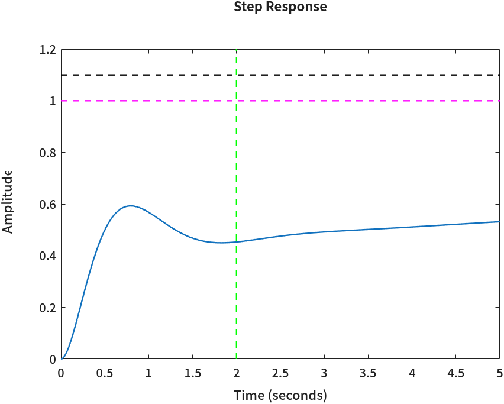
상승시간 41초, 정착시간 80초. 이 설계는 실패다. 첫 예제와 같은 절차를 밟았는데 왜 이렇게 됐나? ⑧의 해석이 그대로 답이다 — PI를 원점 가까이 두는 방법은 「빠른 부분」이 이미 1 가까이 가 있을 때 잘 듣는다. 첫 예제는 PD 단계에서 0.851까지 갔으니 꼬리가 메울 몫이 0.15였다. 이 예제는 PD 단계가 0.418이라 꼬리가 메울 몫이 0.58이다. 응답의 대부분을 느린 극점이 책임지게 된 것이다.
그럼 PI 영점을 원점에서 더 멀리 두면 나아질까? for 문으로 세 위치를 비교한다.
% PI 영점을 어디에 두느냐에 따라 응답이 어떻게 달라지나
zero_pi_list = [-0.1, -0.5, -1.0];
t = 0:0.01:10;
for i = 1:length(zero_pi_list)
z = zero_pi_list(i);
otf_try = otf_pd * (s - z) / s;
K_try = real(-1/evalfr(otf_try, target_pole));
T_try = feedback(K_try*otf_try, 1);
y = step(T_try, t);
plot(t, y)
hold on
S_try = stepinfo(y, t, 1);
fprintf('PI 영점 %.1f: K = %.3f, 최대초과 %.1f%%, 정착시간 %.2f s\n', ...
z, K_try, S_try.Overshoot, S_try.SettlingTime)
end
plot([0 10], [1 1], 'k:')
hold off
legend('PI 영점 -0.1', 'PI 영점 -0.5', 'PI 영점 -1.0', 'Location', 'southeast')
xlabel('Time (seconds)'); ylabel('Amplitude')
title('PI 영점 위치에 따른 계단응답 (두 번째 예제)')
grid on명령 창 출력
PI 영점 -0.1: K = 14.694, 최대초과 0.0%, 정착시간 NaN s
PI 영점 -0.5: K = 15.564, 최대초과 0.0%, 정착시간 NaN s
PI 영점 -1.0: K = 16.156, 최대초과 0.0%, 정착시간 7.57 s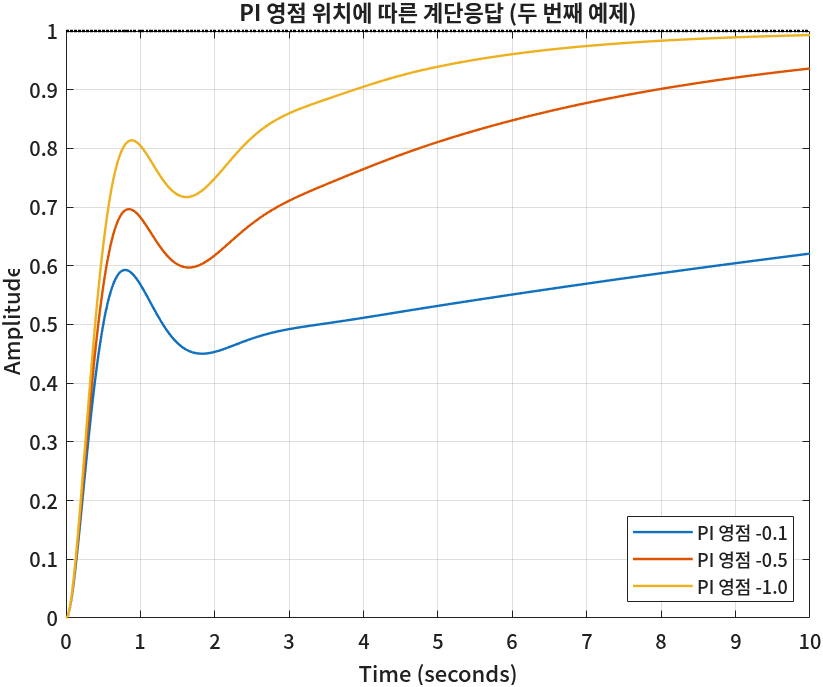
정착시간 NaN은 10초 안에 2% 띠에 들어오지 못했다는 뜻이다. 영점을 왼쪽으로 옮기면 꼬리는 빨라지지만,
PI 영점이 목표 극점(실수부 −2)에 가까워질수록 「원점 가까이 두어 각도를 상쇄시킨다」는 전제가 무너진다 — 목표 극점에서 본 PI 극점과 영점의 각도가 더 이상 비슷하지 않다.
이 문제에서 남은 길은 PD 단계의 정상상태 값 자체를 올리는 것 — 곧 영점 위치나 목표 극점(사양의 여유)을 다시 잡는 것이다.
이것이 연습문제 3번이다.
⚠️ 앞 예제의 코드를 복사해 올 때 — clear 뒤에 남은 변수
- 지워진 변수를 쓰기 쉽다. 두 번째 예제는
clc; clear로 시작한다. 첫 예제의 성능선 코드를 그대로 복사해 오면 첫 예제의tp와 PD 단계의steady를 쓰게 되는데,clear가 둘을 지웠으므로 「Unrecognized function or variable」로 멈춘다. 그래서 위에서는 PD 결과를 확인하는 조각에서steady를 새로 구하고, 성능선은 이 예제의 사양ts로 그었다. - 주석도 같이 고친다. 복사해 온 줄의 주석이 「첨두시간」으로 남아 있으면
ts = 2;가 무엇인지 헷갈린다. 이 예제의 사양은 정착시간이다. - 위에서부터 한 번에 돌려 보는 것이 이런 오류를 잡는 가장 빠른 방법이다. 스크립트를 절마다 따로 실행하면 앞 예제의 변수가 작업공간에 남은 채로 뒤 절이 돌아서 오류가 가려진다.
⑪ Simulink로 확인하기
지금까지는 전달함수를 곱하고 feedback으로 닫는 식으로 시스템을 만들었다.
Simulink는 같은 시스템을 블록 선도로 그려서 시뮬레이션하는 도구다(MATLAB과 함께 설치된다).
교재의 블록 선도를 그대로 옮겨 그리므로 신호가 어디로 흐르는지 눈에 보이고,
나중에 포화·지연·비선형 요소처럼 전달함수로 쓰기 어려운 것을 끼워 넣기도 쉽다.
실습 파일 simulink_pid_design.slx는 첫 예제와 같은 플랜트(교재 예제 8-3)에 P·PD·PID 제어기를 각각 붙인 모델이다.
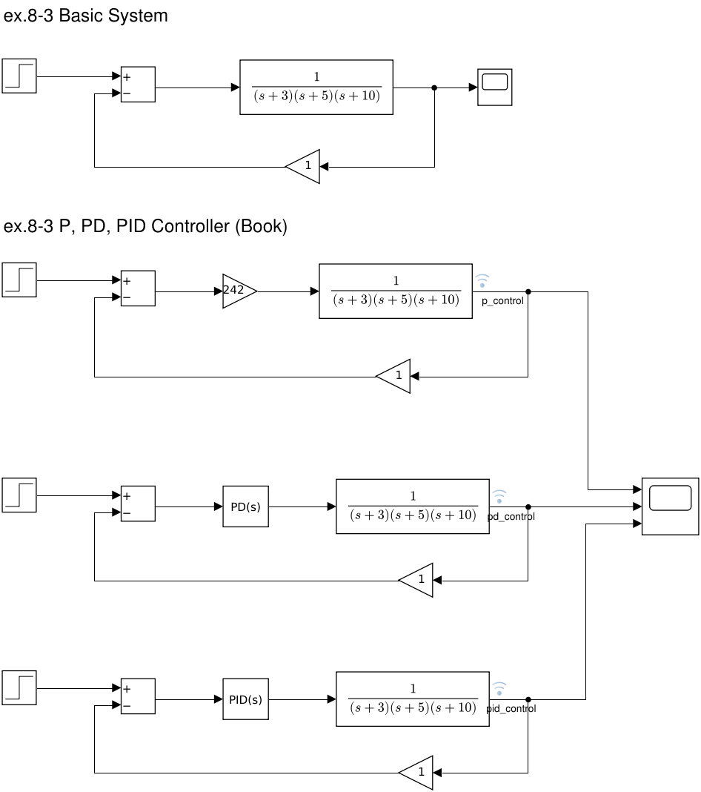
p_control 등)과 안테나 모양 표시는 「이 신호를 기록한다」는 뜻이다.블록과 모델 만드는 법
블록 이름은 Simulink Library Browser에서 검색할 때 쓰는 이름 그대로다.
| 블록 | 그림에서 생김새 | 하는 일 | 이 모델의 설정 |
|---|---|---|---|
| Step | 계단 모양 사각형 | 계단 입력 \(r(t)\) | 0초에 0 → 1 |
| Sum | +, − 표시가 있는 사각형 | 오차 \(e = r - y\)를 만든다 | 부호 +- |
| Gain | 삼각형 | 상수를 곱한다 | 앞쪽 242(P 제어기), 되먹임 1 |
| PID Controller | PD(s) · PID(s) 사각형 | P·I·D 동작을 한 블록에 | 아래 출력 참고 |
| Zero-Pole | 분수 모양 사각형 | 영점·극점·이득으로 전달함수를 적는다 | 극점 [−3 −5 −10], 이득 1 |
| Scope | 모니터 모양 | 신호를 시간 그래프로 보여 준다 | 입력 3개 |
모델을 처음부터 만든다면 아래 순서다.
- MATLAB 명령 창에
simulink를 치거나 홈 탭의 Simulink 버튼을 누르고, Blank Model을 고른다. - 모델 창 빈 곳을 클릭하고 블록 이름(예:
Step)을 바로 타이핑하면 검색 창이 뜬다. 고르면 그 자리에 블록이 놓인다. Library Browser에서 끌어다 놓아도 된다. - 블록의 출력 포트(오른쪽 꺾쇠)에서 입력 포트로 드래그하면 신호선이 이어진다. 되먹임처럼 선에서 갈라지는 선은 기존 선 위에서 드래그를 시작한다.
- 블록을 더블클릭하면 설정 창이 열린다 — Sum의 부호 목록을
|+-로, Zero-Pole의 Poles를[-3 -5 -10]으로 바꾼다. - 기록할 신호선을 오른쪽 클릭하고 Log Selected Signals를 고르면 안테나 표시가 붙는다. 선을 더블클릭해 이름(
pid_control)을 적는다. - 위 툴바의 Run을 누르면 Stop Time(이 모델은 10초)까지 시뮬레이션한다. Scope를 더블클릭하면 그래프가 열린다.
모델을 열지 않고 코드로 설정값을 읽을 수도 있다. 블록 선도의 숫자를 자료에 정확히 옮기려면 이 방법이 확실하다.
clc; clear
model = 'simulink_pid_design';
load_system(model) % 창을 띄우지 않고 모델을 메모리에 올린다
get_param([model '/Gain3'], 'Gain') % P 제어기의 이득
pd = [model '/PID Controller'];
fprintf('PD : Controller=%s, Form=%s, P=%s, I=%s, D=%s, N=%s\n', ...
get_param(pd,'Controller'), get_param(pd,'Form'), get_param(pd,'P'), ...
get_param(pd,'I'), get_param(pd,'D'), get_param(pd,'N'))
pidb = [model '/PID Controller1'];
fprintf('PID: Controller=%s, Form=%s, P=%s, I=%s, D=%s, N=%s\n', ...
get_param(pidb,'Controller'), get_param(pidb,'Form'), get_param(pidb,'P'), ...
get_param(pidb,'I'), get_param(pidb,'D'), get_param(pidb,'N'))
get_param([model '/Zero-Pole1'], 'Poles') % 플랜트의 극점
get_param(model, 'StopTime') % 시뮬레이션 시간명령 창 출력
ans =
'242'
PD : Controller=PD, Form=Parallel, P=123*7, I=1, D=123, N=100
PID: Controller=PID, Form=Ideal, P=852, I=84, D=120, N=100
ans =
'[-3 -5 -10]'
ans =
'10.0'🆕 이 코드에서 처음 나오는 것
- load_system(model)
- Simulink 모델 파일(
.slx)을 창 없이 메모리에 올린다. 창까지 띄우려면open_system. 여기서는 설정값을 읽고 시뮬레이션만 하려고 썼다. - get_param(블록경로, '파라미터이름')
- 블록(또는 모델)의 설정값을 글자로 읽는다. 블록 경로는
'모델이름/블록이름'이다. 여기서는 PID 블록의 P·I·D 칸과 Zero-Pole 블록의 극점을 읽었다. 숫자 대신'123*7'처럼 식이 적혀 있으면 식 그대로 나온다. - [model '/Gain3']
- 문자 배열 두 개를 대괄호로 이어 붙인다. 2회에서 숫자 행렬을 붙이던 것과 같은 문법이 글자에도 먹는다.
📐 이론과 잇기 — 블록의 숫자를 전달함수로
PID Controller 블록의 Parallel 형식은 \(P + I\dfrac{1}{s} + D\dfrac{N s}{s + N}\)이다. 마지막 항은 미분 \(Ds\)에 필터를 씌운 것으로, \(N\)이 클수록 순수 미분에 가깝다(N = 100이면 100 rad/s 아래에서는 거의 \(Ds\)).
PD 블록 (Parallel, P = 123×7, D = 123 — Controller가 PD라서 I 칸의 1은 쓰이지 않아야 한다): 필터를 무시하면
$$861 + 123s = 123(s + 7)$$④~⑤에서 설계한 \(121.45(s + 7.0525)\)와 거의 같다. 교재가 숫자를 반올림했을 뿐 같은 설계다.
PID 블록 (P = 852, I = 84, D = 120): Parallel 식으로 읽으면
$$852 + \frac{84}{s} + 120s = \frac{120s^2 + 852s + 84}{s} = \frac{120(s+7)(s+0.1)}{s}$$PD 영점 −7, PI 영점 −0.1인 제어기다. ⑦의 설계(PI 영점 −0.01)보다 PI 영점을 10배 멀리 두었다 — ⑧에서 본 느린 꼬리를 줄이는 쪽을 고른 것이다.
sim으로 돌리기
Run 버튼 대신 코드로 시뮬레이션하고, 기록된 세 신호를 한 그래프에 그린다.
out = sim(model); % 모델을 끝까지(10초) 시뮬레이션한다
logs = out.logsout; % 이름 붙은 신호선이 여기 기록된다
y_p = logs.getElement('p_control').Values;
y_pd = logs.getElement('pd_control').Values;
y_pid = logs.getElement('pid_control').Values;
plot(y_p.Time, y_p.Data, y_pd.Time, y_pd.Data, y_pid.Time, y_pid.Data)
legend('P (242)', 'PD', 'PID')
xlabel('Time (seconds)'); ylabel('Amplitude')
title('Simulink 시뮬레이션 결과')
grid on
fprintf('t = 10 s 에서 P: %.4f PD: %.4f PID: %.4f\n', ...
y_p.Data(end), y_pd.Data(end), y_pid.Data(end))명령 창 출력
t = 10 s 에서 P: 0.6173 PD: 0.8531 PID: 0.9374🆕 이 코드에서 처음 나오는 것
- out = sim(model)
- 모델을 Stop Time까지 시뮬레이션하고 결과 묶음(
Simulink.SimulationOutput)을 돌려준다. 여기서는 Run 버튼과 같은 일을 코드로 했다. - out.logsout.getElement('이름').Values
logsout은 기록 표시(안테나)를 붙인 신호들의 모음이고,getElement가 신호선 이름으로 하나를 꺼낸다..Values는 시계열(timeseries)이라.Time과.Data로 시간과 값을 꺼낸다. 여기서는 세 제어기의 출력을 꺼내plot에 넣었다.
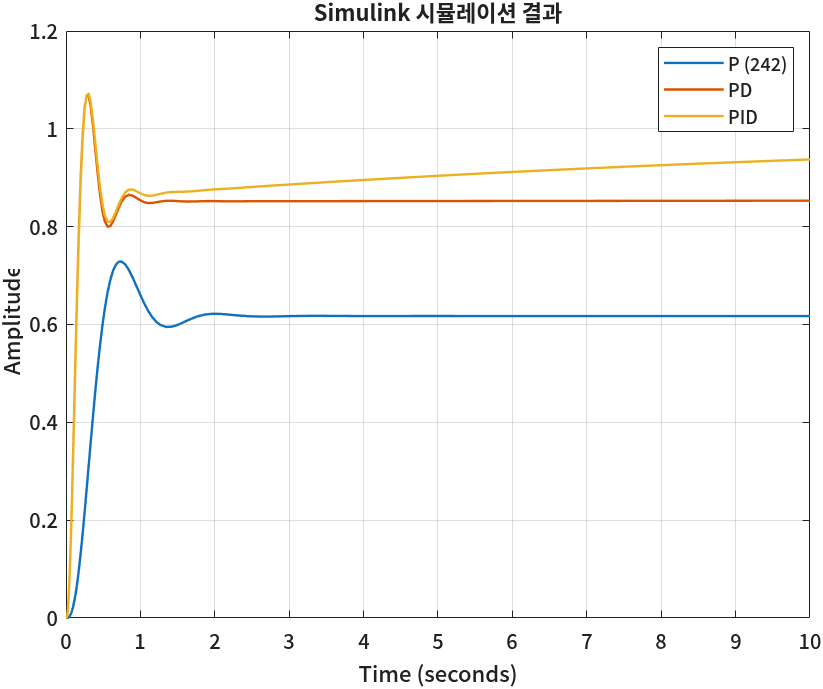
세 숫자를 이론과 맞춰 본다. 세 루프 모두 개루프의 DC 이득이 「제어기의 DC 이득 ÷ 150」이다.
- P: 0.6173 — \(242/(150+242) = 0.6173\). 맞다.
- PD: 0.8531 — 미분 항은 DC에서 0이므로 \(861/(150+861) = 0.8516\)이어야 한다. 0.0015가 남는다.
- PID: 0.9374 — 적분기가 있으니 최종값은 1이고, 10초에서는 ⑧의 느린 꼬리를 타고 오르는 중이다.
먼저 P 제어기의 이득 242가 근궤적의 어디인지 확인해 둔다.
% P 제어기의 이득 242 는 근궤적의 어디인가 — 그 K 에서 폐루프 극점과 제동비를 본다
s = tf('s');
G = 1/((s+3)*(s+5)*(s+10));
T_p = feedback(242*G, 1);
damp(T_p)
dc_p = dcgain(T_p)명령 창 출력
Pole Damping Frequency Time Constant
(rad/seconds) (seconds)
-2.49e+00 + 4.89e+00i 4.54e-01 5.49e+00 4.01e-01
-2.49e+00 - 4.89e+00i 4.54e-01 5.49e+00 4.01e-01
-1.30e+01 1.00e+00 1.30e+01 7.68e-02
dc_p =
0.6173제동비 0.454 — 보상 전 근궤적이 최대초과 20% 선(ζ = 0.456)과 만나는 점이 K = 242다. P 제어로 최대초과는 맞출 수 있지만 그때 극점의 허수부가 4.89라 첨두시간이 \(\pi/4.89 = 0.64\)초로 사양 0.3초의 두 배가 넘는다. ③의 「비례 제어의 한계」를 Simulink 그래프가 확인해 준다.
이제 PD의 0.0015를 따진다. 작은 차이지만 적분기가 없는 루프는 한번 멈추면 그 값에 머문다. 0.8516에 멈춰야 할 출력이 0.8531이라면, 정말 멈춘 것인지부터 시간을 길게 잡아 확인한다.
% PD 루프에는 적분기가 없으니 출력은 861/(150+861) = 0.8516 에서 멈춰야 한다 — 300초 동안 돌려 확인한다
out3 = sim(model, 'StopTime', '300');
y_pd3 = out3.logsout.getElement('pd_control').Values;
fprintf('PD 출력 t = 10 s: %.4f t = 100 s: %.4f t = 300 s: %.4f\n', ...
interp1(y_pd3.Time, y_pd3.Data, 10), interp1(y_pd3.Time, y_pd3.Data, 100), y_pd3.Data(end))명령 창 출력
PD 출력 t = 10 s: 0.8531 t = 100 s: 0.8656 t = 300 s: 0.8898🆕 이 코드에서 처음 나오는 것
- sim(model, 'StopTime', '300')
- 모델 파일의 설정을 바꾸지 않고 이번 시뮬레이션에만 정지 시간을 300초로 준다. 값은 글자로 준다.
- interp1(x, y, xq)
- 표 (x, y) 사이를 직선으로 이어 xq에서의 값을 읽는다(선형 보간). Simulink는 시간 간격을 스스로 바꿔 가며 계산하므로 정확히 10초인 칸이 없을 수 있다. 여기서는 10초·100초에서의 출력을 읽는 데 썼다.
PD 출력이 계속 오른다 — 10초 0.8531, 100초 0.8656, 300초 0.8898. 루프 안에 적분기가 있다는 뜻이다. PD 블록의 I 칸에는 1이 적혀 있었다(⑪ 첫 조각의 출력). Controller가 PD이면 그 칸은 쓰이지 않아야 하는데, 이 모델 파일에서는 적분 이득 1이 살아 있는 것처럼 동작한다. 같은 일이 PID 블록에도 있는지 형식(Form)을 따져 본다.
% PID 블록의 숫자 P=852, I=84, D=120 을 두 형식의 식에 넣어 본다 (미분 필터는 빼고)
C_parallel = 852 + 84/s + 120*s; % Parallel: P + I/s + D s
C_ideal = 852*(1 + 84/s + 120*s); % Ideal : P (1 + I/s + D s)
disp('Parallel 식으로 읽은 영점'); disp(zero(C_parallel))
disp('Ideal 식으로 읽은 영점'); disp(zero(C_ideal))
% 블록 설정을 숫자의 뜻에 맞게 고치고 다시 돌린다 (저장하지 않는다 — 메모리 안의 모델만 바뀐다)
set_param(pd, 'I', '0'); % PD 블록: 적분 이득을 0으로
set_param(pidb, 'Form', 'Parallel'); % PID 블록: Parallel 형식으로
out2 = sim(model);
y_pd2 = out2.logsout.getElement('pd_control').Values;
y_pid2 = out2.logsout.getElement('pid_control').Values;
% 같은 제어기를 MATLAB 으로 — 블록과 똑같이 미분 항에 필터 N = 100 을 씌운다
N = 100;
T_pd = feedback((861 + 123*N*s/(s+N))*G, 1);
T_pid = feedback((852 + 84/s + 120*N*s/(s+N))*G, 1);
t = 0:0.01:10;
y_pd_m = step(T_pd, t);
y_pid_m = step(T_pid, t);
plot(y_pd2.Time, y_pd2.Data, 'b-', y_pid2.Time, y_pid2.Data, 'r-', 'LineWidth', 1.5)
hold on
plot(t, y_pd_m, 'k:', t, y_pid_m, 'k:', 'LineWidth', 1.5)
hold off
legend('Simulink PD', 'Simulink PID', 'MATLAB step', 'Location', 'southeast')
xlabel('Time (seconds)'); ylabel('Amplitude')
title('설정을 고친 Simulink 와 MATLAB 의 폐루프 응답')
grid on
fprintf('t = 10 s 에서 PD Simulink: %.4f MATLAB: %.4f\n', y_pd2.Data(end), y_pd_m(end))
fprintf('t = 10 s 에서 PID Simulink: %.4f MATLAB: %.4f\n', y_pid2.Data(end), y_pid_m(end))
close_system(model, 0); % 바꾼 모델을 저장하지 않고 닫는다명령 창 출력
Parallel 식으로 읽은 영점
-7.0000
-0.1000
Ideal 식으로 읽은 영점
-0.0042 + 0.8366i
-0.0042 - 0.8366i
t = 10 s 에서 PD Simulink: 0.8516 MATLAB: 0.8516
t = 10 s 에서 PID Simulink: 0.9374 MATLAB: 0.9374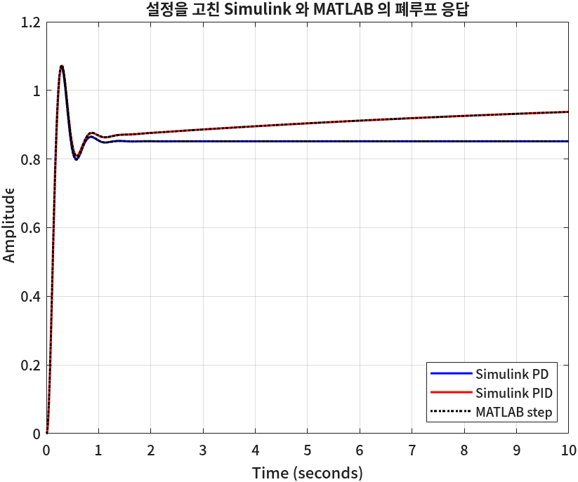
🆕 이 코드에서 처음 나오는 것
- set_param(블록경로, '파라미터이름', 값)
get_param의 짝으로, 설정 창에서 값을 바꾸는 것과 같다. 값은 글자로 준다. 여기서는 PD 블록의 I를 0으로, PID 블록의 Form을 Parallel로 바꿨다.save_system을 부르지 않으면 파일은 그대로다.- close_system(model, 0)
- 모델을 메모리에서 내린다. 두 번째 인자 0은 「바뀐 것을 저장하지 않는다」. 여기서는 설정을 바꾼 모델이 저장된
.slx파일에 덮어써지지 않게 하려고 썼다. - plot(…, 'LineWidth', 1.5)
- 선 굵기를 정하는 이름-값 인자. 여기서는 겹치는 선들이 모두 보이게 굵게 그렸다.
MATLAB 쪽에서는 블록과 똑같이 미분 항에 필터 \(Ns/(s+N)\)를 씌웠다. 그래서 PD의 첨두도 Simulink와 같은 1.07이다. 필터 없이 설계한 ⑥의 첨두는 1.031이었다 — 블록 선도로 옮기면 식에서 생략했던 필터가 응답에 드러난다.
⚠️ PID 블록의 설정 — 같은 숫자, 다른 제어기
- Form. 모델의 PID 블록은 Form이 Ideal로 저장돼 있었다. Ideal 형식은 \(P\bigl(1 + I/s + Ds\bigr)\)이라 P가 I·D에도 곱해진다. 같은 852·84·120을 Ideal 식에 넣으면 영점이 \(-0.0042 \pm j0.8366\)인 전혀 다른 제어기가 된다(위 출력). 교재의 \(120(s+7)(s+0.1)/s\)는 Parallel 식으로 읽어야 나온다. ⑨에서 구한 \(K_p\)·\(K_i\)·\(K_d\)도 Parallel 형식의 값이다.
- 쓰지 않는 칸. PD 블록의 I 칸에 남아 있던 1이 동작에 섞여 들었다. 쓰지 않는 이득은 0으로 적어 두는 것이 안전하다.
- 이 파일은 고치기 전에도 PID 출력이 Parallel 식의 MATLAB 계산과 같았다(10초에서 0.9374). 대화상자의 설정과 블록의 실제 동작이 어긋나 있었던 셈이고, 그 어긋남은 결과를 이론값과 맞춰 볼 때에만 드러났다. 모델을 쓸 때는 PD 블록의 I를 0으로, PID 블록의 Form을 Parallel로 직접 맞춰 둔다.
🧪 실습
사양을 바꿔 PID를 다시 설계하고, MATLAB과 Simulink로 확인한다
이걸 해 보면 무엇을 알게 되나: 사양 → 목표 극점 → PD 영점 → K → PI 영점의 다섯 단계를 혼자 끝까지 밟아 보고, 설계 결과(K, 영점)가 모델 블록의 숫자로 어떻게 옮겨지는지 손으로 확인한다.
준비물: MATLAB(Control System Toolbox · Simulink), 6회의 함수 세 개(draw_*_line.m), 오늘의 함수 두 개(design_pd_controller.m · mark_closed_pole.m), simulink_pid_design.slx — 모두 한 폴더에.
- 첫 예제의 조각 ①~⑧을 스크립트 하나(
pid_design.m)에 차례로 붙여 넣고 실행해, 자료와 같은 숫자(영점 −7.0525, K = 121.50)가 나오는지 본다. (10분) - 사양을 최대초과 15%, 첨두시간 0.4초로 바꿔 다시 실행한다. 목표 극점·PD 영점·K가 각각 얼마로 바뀌는지 적는다. (10분)
- ⑨의 식으로 \(K_p, K_i, K_d\)를 구한다. (5분)
- Simulink 모델을 열어 PID 블록의 Form을 Parallel로 바꾸고, P·I·D 칸에 3번의 값을 넣고 Run을 누른다(PD 블록의 I 칸은 0으로). Scope에서 응답을 본다. (10분)
- 같은 제어기로 MATLAB에서
step(feedback(C*G,1))을 그려 Scope의 그래프와 모양을 비교한다. (5분)
이렇게 되면 성공이다: 4번의 Scope 그래프와 5번의 MATLAB 그래프가 ⑪의 마지막 그림처럼 거의 겹치고, 첨두시간이 0.4초 근처에 찍힌다. 1번에서 자료와 숫자가 다르면 6회 함수가 같은 폴더에 있는지부터 확인한다.
📝 연습문제
- 영점이 있는 플랜트. \(G(s) = \dfrac{s+6}{(s+2)(s+4)(s+10)}\)에 최대초과 20%, 첨두시간 0.4초 사양으로
design_pd_controller를 실행해 본다. ④의 ⚠️ 상자처럼if안에 이름 오타가 있는 함수였다면 어디서 멈췄을지 짚고, 출력의 「영점의 위상」 줄이 각도 합에 어떻게 들어가는지 설명한다. - PI 영점의 맞바꿈. 첫 예제에서 PI 영점을 −0.01, −0.1, −0.5로 바꿔 가며 ⑩의 마지막 조각처럼
for문으로 비교한다. 각 경우의 최대초과와 정착시간(최종값 1, 시간 구간 600초)을 표로 정리하고, 교재(Simulink 모델)가 −0.1을 고른 이유를 표의 숫자로 설명한다. - 두 번째 예제 살리기. ⑩의 설계를 사양에 맞게 고친다. 바꿀 수 있는 것은 목표 극점(사양에 여유를 두기), PD 영점의 위치(각도 조건을 지키면서는 바꿀 수 없다는 점에 주의), PI 영점이다.
무엇을 바꿨는지, 그때 PD 단계의 정상상태 값이 얼마로 올랐는지, 최종
stepinfo(y, t, 1)결과를 함께 적는다. - 필터 N의 효과. Simulink 모델의 PD 블록에서 I를 0으로 맞춘 뒤 N을 100, 20, 1000으로 바꿔 시뮬레이션하고, 첨두값이 어떻게 바뀌는지 적는다. N이 클수록 MATLAB의 ⑥ 결과(첨두 1.031)에 가까워지는지 확인한다.
✅ 점검
조금 더 알아두면
pidtune — 자동 조정과 비교하기
Control System Toolbox에는 PID 이득을 자동으로 고르는 pidtune이 있다.
극점 위치를 사양으로 주는 오늘의 방법과 달리, 응답 속도와 위상 여유(8회에서 배운다)의 균형을 기준으로 이득을 고른다.
% 비교: 극점 배치 대신 응답 속도와 위상 여유를 기준으로 자동 조정한 PID
C_auto = pidtune(G, 'PID')
S_auto = stepinfo(feedback(C_auto*G, 1))명령 창 출력
C_auto =
1
Kp + Ki * --- + Kd * s
s
with Kp = 354, Ki = 715, Kd = 42.6
Continuous-time PID controller in parallel form.
Model Properties
S_auto =
struct with fields:
RiseTime: 0.3339
TransientTime: 1.0458
SettlingTime: 1.0458
SettlingMin: 0.9037
SettlingMax: 1.0553
Overshoot: 5.5264
Undershoot: 0
Peak: 1.0553
PeakTime: 0.7119🆕 이 코드에서 처음 나오는 것
- C = pidtune(G, 'PID')
- 플랜트 G에 맞는 PID 이득을 자동으로 골라
pid객체로 돌려준다. 두 번째 인자로'PI'·'PD'도 고를 수 있다. 여기서는 오늘 손으로 설계한 제어기와 비교하려고 썼다.
자동 조정 결과는 \(K_i = 715\)로 적분 동작이 오늘 설계(8.57)보다 80배 강하다. 그래서 느린 꼬리 없이 1.05초 만에 정착한다.
대신 첨두시간이 0.71초로, 첨두시간 0.3초라는 사양은 맞추지 않는다 — pidtune은 그 사양을 모르기 때문이다.
사양을 극점 위치로 정확히 못박아야 할 때는 오늘의 방법, 무난한 출발점이 필요할 때는 pidtune이라고 보면 대체로 맞다.
MATLAB에는 같은 일을 그래프를 보며 하는 PID Tuner 앱(pidTuner(G))도 있다.
미분 제어를 실제로 쓸 때
순수 미분 \(K_d s\)는 주파수가 높을수록 이득이 끝없이 커져서, 센서 잡음을 그대로 증폭한다. 그래서 실제 PID에는 Simulink 블록처럼 미분 항에 필터(\(Ns/(s+N)\))를 씌운다. ⑪에서 본 첨두값 차이(1.031 → 1.07)가 그 필터의 흔적이다. N은 보통 설계한 폐루프 대역폭보다 열 배쯤 크게 잡는다.